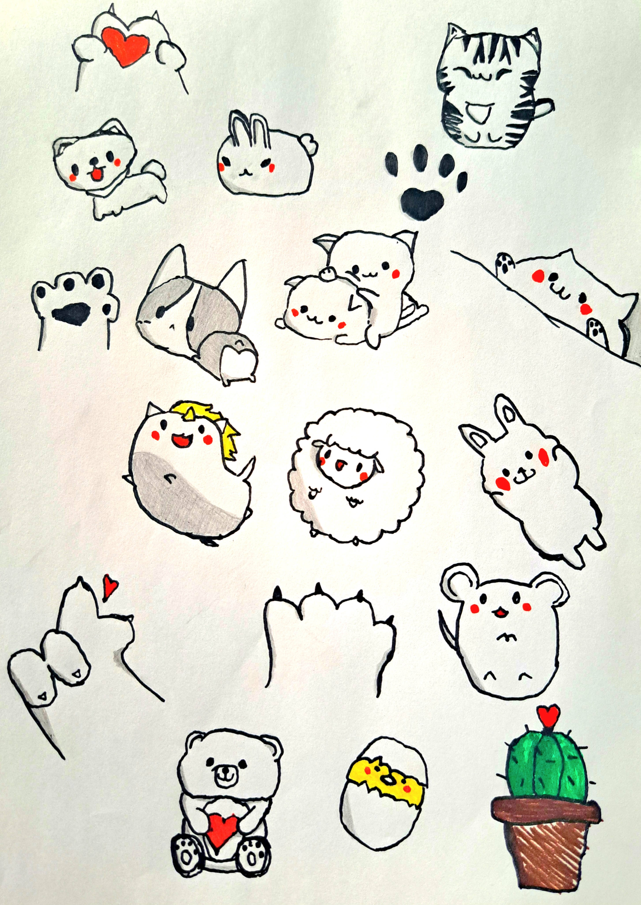
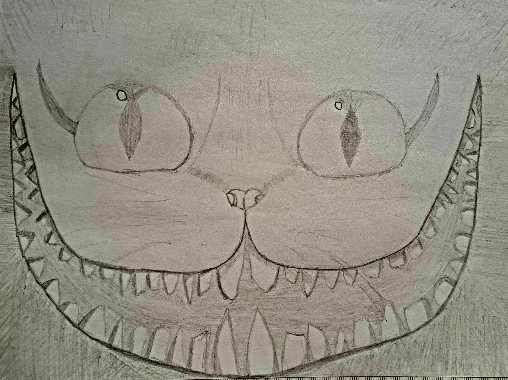
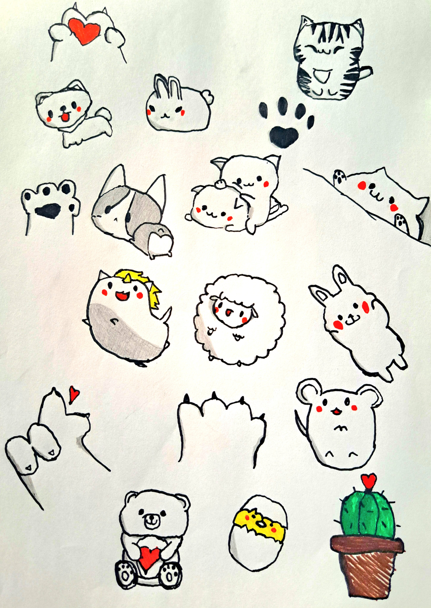
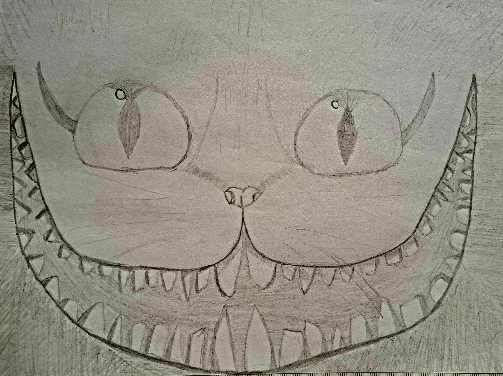

Sobre o site
Bem-vindo ao meu cantinho criativo, um espaço onde a arte ganha vida e se transforma em emoções vivas e vibrantes. Como alguém que recentemente mergulhou no universo criativo, a emoção e a paixão que sinto a cada traço são incomparáveis.
Este site é o resultado de horas inspiradoras passadas com meu caderno, onde três desenhos ganharam vida. Cada página virada revela uma nova aventura, uma nova descoberta, e é uma honra compartilhar esses momentos com vocês.
Um dos meus desenhos favoritos é uma explosão de fofura: um reino encantado de animaizinhos rodeados por corações. É como se esses pequenos seres transmitissem amor através das minhas linhas, e espero que esse amor alcance você também.
Outra página do meu caderno ganhou vida com o traçado de uma árvore em forma de coração. A beleza da natureza e a simbologia do coração se unem para criar uma obra que representa o amor à terra e à vida. Seus ramos formam uma dança graciosa, como se soubessem que são símbolos da força e do amor.
No entanto, meu mundo artístico não é apenas flores e corações. Às vezes, é nos traços mais inesperados que encontramos uma conexão mais profunda com a arte. Um gato com um sorriso um tanto inquietante. Ele representa as sombras da imaginação, aquela parte misteriosa e curiosa que todos nós carregamos. A arte me permite explorar o desconhecido, abraçar o estranho e encontrar beleza naquilo que está além das aparências (inspirado no Gato de Cheshire).
Este site é meu convite para você se juntar a mim nessa viagem através das linhas e das cores. É uma celebração da jornada desde os primeiros rabiscos até os desenhos que refletem as complexidades da vida. Espero que você encontre inspiração, encanto e um vislumbre da alegria que a arte traz à minha vida. Seja bem-vindo ao meu mundo de paixão, imaginação e criatividade!